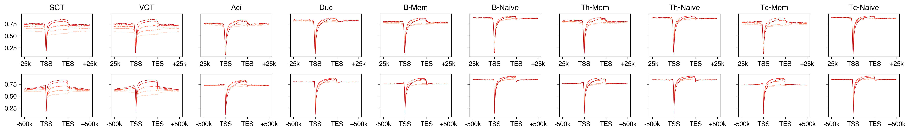
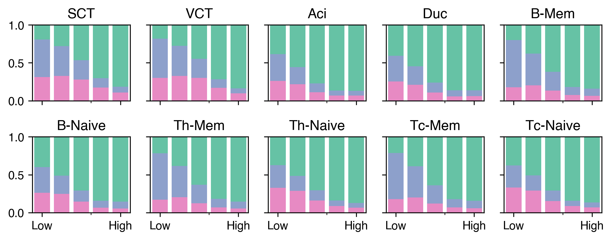
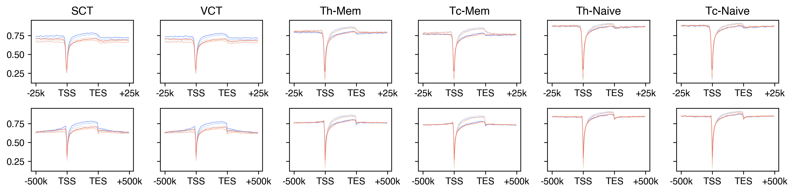
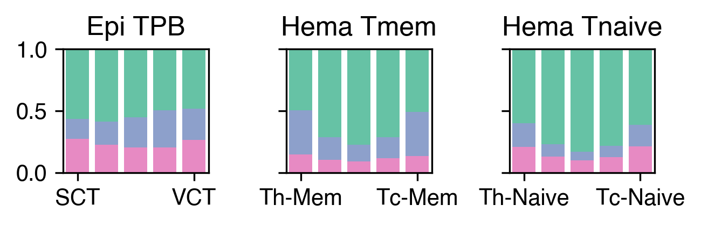
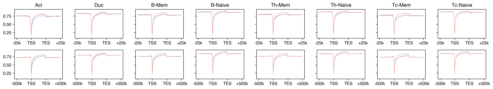
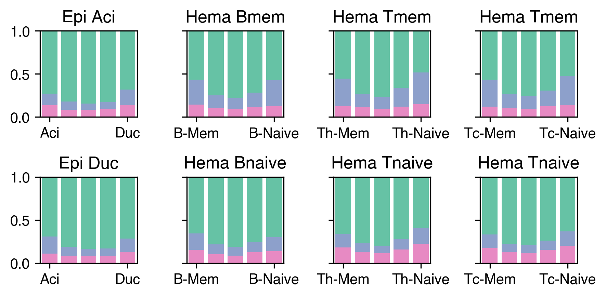

Methylation compartments vs gene expression (Fig 2I–L, S11A–F)#
Part of the Fig. 2 chapter — see it for the panel-by-panel map. The first code cell sets ENTEX_ROOT and activates the no-overwrite guard (see the Reproduction guide). Outputs shown are the author’s original run.
📥 Required input files#
This notebook reads the following files (paths resolve from ENTEX_ROOT/REF_ROOT; the setup cell sets them). See the chapter’s inputs.md for RAW-vs-derived tags.
f'{indir}L1color.tsv'· metadata: colorf'{REF_ROOT}/hg38/gencode/v30/gencode.v30.annotation.gene.flat.tsv.gz'· ref: gencodef'{pmddir}{ct}_10kb_hist.h5ad'· PMD/methyl-compartmentf'{outdir}{group_name}/bulkexpr_{study}.hdf'· expressionf'{outdir}{group_name}/design_{study}.hdf'· otherf'{outdir}flank_bed/{peak_ct}.split{split}.slop{ws}b.{w}b.{bw_ct}.CGN-Merge.hdf'· otherf'{outdir}flank_bed/tss_{pmd_ct}_3state.txt'· PMD/methyl-compartmentf'{indir}analysis/PMD/{pmd_file}.pmd.gene50.txt'· PMD/methyl-compartmentf'{indir}analysis/PMD/{pmd_file}.pmd.tss.txt'· PMD/methyl-compartment
# === Reproduction setup — edit ENTEX_ROOT / REF_ROOT for your machine ===
import os, sys
ENTEX_ROOT = os.environ.get('ENTEX_ROOT', '/large_storage/zhoulab/zhoujt/project/ENTEx')
REF_ROOT = os.environ.get('REF_ROOT', '/large_storage/zhoulab/ref')
BOOK_ROOT = os.environ.get('BOOK_ROOT', f'{ENTEX_ROOT}/analysis/HumanCellEpigenomeAtlas')
sys.path.insert(0, BOOK_ROOT)
os.chdir(f'{ENTEX_ROOT}/analysis') # original working directory
import repro_guard # no-overwrite guard (default: skip existing)
import os
import time
import numpy as np
import pandas as pd
from glob import glob
import seaborn as sns
import matplotlib as mpl
import matplotlib.pyplot as plt
from concurrent.futures import ProcessPoolExecutor, as_completed
from statsmodels.stats.multitest import multipletests as FDR
import cooler
import anndata
import scanpy as sc
import scanpy.external as sce
from sklearn.preprocessing import normalize
from ALLCools.clustering import *
from ALLCools.plot import *
from ALLCools.mcds import MCDS
from ALLCools.integration.seurat_class import SeuratIntegration
mpl.style.use('default')
mpl.rcParams['pdf.fonttype'] = 42
mpl.rcParams['ps.fonttype'] = 42
mpl.rcParams['font.family'] = 'sans-serif'
mpl.rcParams['font.sans-serif'] = 'Helvetica'
def dump_embedding(adata, name, n_dim=2):
# put manifold coordinates into adata.obs
for i in range(n_dim):
adata.obs[f'{name}_{i}'] = adata.obsm[f'X_{name}'][:, i]
return adata
chrom_size_path = f'{REF_ROOT}/hg38/fasta/hg38.main.chrom.sizes'
chrom_sizes = cooler.read_chromsizes(chrom_size_path, all_names=True)
chrom_sizes = chrom_sizes.iloc[:22]
indir = f'{ENTEX_ROOT}/'
outdir = f'{indir}analysis/PMD_RNA/'
L1_meta = pd.read_csv(f'{indir}L1color.tsv', sep='\t', header=0, index_col=0)
L1_meta = L1_meta.drop(['c7'], axis=0)
L1_annot = L1_meta['L1_abbr'].to_dict()
L1_color = L1_meta['color'].to_dict()
L1_color.update({L1_annot[k]: L1_color[k] for k in L1_annot if k in L1_color}) # also key by name
def expand_bed(input_file, window_size, window, split, min_split_size):
dist = window_size * window
dist_str = num2str(dist)
ws_str = num2str(window_size)
bed = pd.read_csv(input_file, sep='\t', header=None, index_col=None, usecols=[0,1,2], names=['chrom', 'start', 'end'])
bed = bed.loc[bed['chrom'].isin(chrom_sizes.index)]
if split==0:
mid = ((bed['start'] + bed['end']) // 2).astype(int)
bed['start'], bed['end'] = mid.copy(), mid.copy()
bed['start'] = bed['start'] - dist
bed['end'] = bed['end'] + dist
bed = bed.loc[(bed['start']>0) & (bed['end']<bed['chrom'].map(chrom_sizes))]
bed_new = []
for idx,xx,yy,zz in bed.reset_index().values:
if split>0:
split_size = (zz-yy-2*dist) / split
if split_size<min_split_size:
continue
for i in range(window):
bed_new.append([xx, yy+window_size*i, yy+window_size*(i+1), f'{idx}_{i}'])
# if (yy+dist)<(zz-dist):
# bed_new.append([xx, yy+dist, zz-dist])
if split>0:
for i in range(split):
bed_new.append([xx, yy+dist+split_size*i, yy+dist+split_size*(i+1), f'{idx}_{window+i}'])
for i in range(window):
bed_new.append([xx, zz-dist+window_size*i, zz-dist+window_size*(i+1), f'{idx}_{window+split+i}'])
print(len(bed_new))
bed_new = pd.DataFrame(bed_new)
bed_new[[1,2]] = np.around(bed_new[[1,2]], decimals=0).astype(int)
bed_new.to_csv(input_file.replace('.bed',f'.split{split}.slop{dist_str}b.{ws_str}b.bed'), sep='\t', header=False, index=False)
return dist_str, ws_str
def num2str(num):
if num>=1e6:
num_str = f'{int(num//1e6)}m'
elif num>=1e3:
num_str = f'{int(num//1e3)}k'
else:
num_str = f'{num}'
return num_str
def generate_flankmap(peak_group, mc_group, window_size=500, window=50, split=0, min_split_size=1):
dist_str, ws_str = expand_bed(f'{peak_group}.bed', window_size=window_size, window=window, split=split, min_split_size=min_split_size)
time.sleep(3)
cmd = f'bigWigAverageOverBed {mc_group}.CGN-Merge.frac.bw {peak_group}.split{split}.slop{dist_str}b.{ws_str}b.bed {peak_group}.split{split}.slop{dist_str}b.{ws_str}b.{mc_group.split("/")[-1]}.CGN-Merge.tsv'
os.system(cmd)
return
gene_meta = pd.read_csv(f'{REF_ROOT}/hg38/gencode/v30/gencode.v30.annotation.gene.flat.tsv.gz', sep='\t', header=0)
gene_meta['gene_id_idx'] = gene_meta['gene_id'].str.split('.').str[0]
gene_meta['TSS'] = gene_meta['start'].copy()
selg = (gene_meta['strand']=='-')
gene_meta.loc[selg, 'TSS'] = gene_meta.loc[selg, 'end']
gene_meta['length'] = gene_meta['end'] - gene_meta['start']
tmp = gene_meta.set_index('gene_id_idx')
# sns.histplot(tmp['length'], bins=100, log_scale=(10, None))
pmddir = f'{indir}analysis/PMD/L1/'
def mapstate(ct):
if not os.path.exists(f'{pmddir}{ct}_3state.bed'):
adata = anndata.read_h5ad(f'{pmddir}{ct}_10kb_hist.h5ad')
adata.obs[['chrom', 'start', 'end']] = adata.obs.index.str.split('-').to_list()
adata.obs[['chrom', 'start', 'end', 'kmeans3']].to_csv(f'{pmddir}{ct}_3state.bed', index=False, header=False, sep='\t')
cmd = f'bedtools intersect -wa -wb -a {outdir}flank_bed/tss.bed -b {pmddir}{ct}_3state.bed -f 0.5 | sort -k1,1 -k2,2n -u > {outdir}flank_bed/tss_{ct}_3state.txt'
os.system(cmd)
return
from concurrent.futures import ProcessPoolExecutor, as_completed
cpu = 20
with ProcessPoolExecutor(cpu) as executor:
futures = {}
for ct in L1_meta.index:
future = executor.submit(
mapstate,
ct=ct,
)
futures[future] = ct
result = {}
for future in as_completed(futures):
ct = futures[future]
result[ct] = future.result()
print(f'{ct} finished')
cluster_color = {i:xx for i,xx in zip([0,1,1,2], sns.color_palette('Set2', 4))}
# dmr_list = np.sort(glob(f'{outdir}*gene.bed'))
# dmr_list = np.sort([xx.replace('.bed', '') for xx in dmr_list])
dmr_list = np.array([f'{outdir}flank_bed/tss', f'{outdir}flank_bed/gene'])
# bw_list = glob(f'{indir}analysis/PMD_RNA/*/*.frac.bw')
bw_list = glob(f'{indir}analysis/PMD_DMR/*/*.frac.bw')
bw_list = np.sort([xx.replace('.CGN-Merge.frac.bw', '') for xx in bw_list])
print(dmr_list, bw_list)
cpu = 32
ws = 10000
w = 50
with ProcessPoolExecutor(cpu) as executor:
futures = {}
for peak_ct, split in zip(dmr_list, [0, 50]):
# peak_ct = dmr_list[1]
for mc_ct in bw_list:
future = executor.submit(
generate_flankmap,
peak_group=peak_ct,
mc_group=mc_ct,
window_size=ws, window=w, split=split, min_split_size=1
)
futures[future] = f'{peak_ct}-{mc_ct}'
result = {}
for future in as_completed(futures):
ct = futures[future]
result[ct] = future.result()
print(f'{ct} finished')
for split, peak_ct in zip([0, 50], dmr_list):
region = pd.read_csv(f'{peak_ct}.bed', sep='\t', header=None, index_col=3)
# selr = pd.read_csv(f'{peak_ct}.split{split}.slop25kb.500b.bed', index_col=3, header=None, sep='\t')
# selr = selr.index.str.split('_').str[0].astype(int).unique()
# region = region.iloc[selr]
# selr = (region[5]=='-').values
for xx in bw_list:
mc_ct = xx.split('/')[-1]
data = pd.read_csv(f'{peak_ct}.split{split}.slop{num2str(ws*w)}b.{num2str(ws)}b.{mc_ct}.CGN-Merge.tsv', sep='\t', header=None, index_col=0)
selr = data.index.str.split('_').str[0].astype(int).unique()
region_tmp = region.iloc[selr]
ratio = data[5].values.reshape((-1, 100+split))
cov = data[2].values.reshape((-1, 100+split))
ratio[cov==0] = np.nan
selr = (region_tmp[5]=='-')
ratio[selr] = ratio[selr, ::-1]
ratio = pd.DataFrame(ratio, index=region_tmp.index)
ratio.to_hdf(f'{peak_ct}.split{split}.slop{num2str(ws*w)}b.{num2str(ws)}b.{mc_ct}.CGN-Merge.hdf', key='data')
print(peak_ct, mc_ct)
group_name_list = ['Epi-TPB', 'Epi-Exocri', 'Hema-B-PBMC', 'Hema-Th-PBMC', 'Hema-Tc-PBMC']
study_list = ['Arutyunyan2023', 'Fasolino2022', 'Hao2021', 'Hao2021', 'Hao2021']
selct_list = [['SCT', 'VCT'],
['Aci', 'Duc'],
['B-Mem', 'B-Naive'],
['Th-Mem', 'Th-Naive'],
['Tc-Mem', 'Tc-Naive']]
pmd_list = [['c2', 'c2'],
['c22', 'c30'],
['c35', 'c36'],
['c1', 'c15'],
['c1', 'c15']]
peak_ct = 'gene'
palette = sns.color_palette('Reds', n_colors=5)
split = 50
fig, axes = plt.subplots(2, 10, figsize=(20, 3), dpi=300, sharey=True)
for g,(group_name,study,selct) in enumerate(zip(group_name_list, study_list, selct_list)):
expr = pd.read_hdf(f'{outdir}{group_name}/bulkexpr_{study}.hdf', key='data')
design = pd.read_hdf(f'{outdir}{group_name}/design_{study}.hdf', key='data')
sels = design.loc[design['celltype'].isin(selct)].sort_values('celltype').index
expr = expr.loc[sels]
design = design.loc[sels]
# bw_list = selct.copy()
expr = expr / expr.sum(axis=1).values[:, None] * 1e6
expr = expr.groupby(design['celltype']).mean().T
for i,(ws,w) in enumerate(zip(['25k', '500k'], ['500', '10k'])):
for j,bw_ct in enumerate(selct):
ax = axes[i,g*2+j]
ratio = pd.read_hdf(f'{outdir}flank_bed/{peak_ct}.split{split}.slop{ws}b.{w}b.{bw_ct}.CGN-Merge.hdf', key='data')
selr = (ratio.isna().sum(axis=1)<(0.2*ratio.shape[1]))
ratio = ratio.loc[selr & ratio.index.isin(expr.index)]
idx = np.arange(ratio.shape[1])
exprtmp = expr.loc[ratio.index, bw_ct]
# gene_list = [exprtmp.index[exprtmp==0]]
# exprtmp = exprtmp[exprtmp>0]
gene_list = []
for _,df in exprtmp.groupby(pd.qcut(exprtmp, 5, labels=False)):
gene_list.append(df.index)
for k,selg in enumerate(gene_list):
tmp = np.nanmean(ratio.loc[selg], axis=0)
ax.plot(idx, tmp, color=palette[k], linewidth=0.5)
if i==0:
ax.set_title(bw_ct)
ax.set_xticks([0, 50, 50+split, 100+split])
ax.set_xticklabels([f'-{ws}', 'TSS', 'TES', f'+{ws}'])
fig.tight_layout()
fig.savefig(f'{outdir}mCG_geneflank_exprgroup.pdf', transparent=True)

fig, axes = plt.subplots(2, 5, figsize=(7.5, 3), dpi=300, sharex='all', sharey='all')
for g,(group_name,study,selct,selmt) in enumerate(zip(group_name_list, study_list, selct_list, pmd_list)):
expr = pd.read_hdf(f'{outdir}{group_name}/bulkexpr_{study}.hdf', key='data')
design = pd.read_hdf(f'{outdir}{group_name}/design_{study}.hdf', key='data')
sels = design.loc[design['celltype'].isin(selct)].sort_values('celltype').index
expr = expr.loc[sels]
design = design.loc[sels]
# bw_list = selct.copy()
expr = expr / expr.sum(axis=1).values[:, None] * 1e6
expr = expr.groupby(design['celltype']).mean().T
for j,(bw_ct,pmd_ct) in enumerate(zip(selct, selmt)):
pmd = pd.read_csv(f'{outdir}flank_bed/tss_{pmd_ct}_3state.txt', sep='\t', index_col=3, header=None)[9]
ax = axes.flatten()[g*2+j]
exprtmp = expr.loc[expr.index.isin(pmd.index), bw_ct]
# gene_list = [exprtmp.index[exprtmp==0]]
# exprtmp = exprtmp[exprtmp>0]
gene_list = []
for _,df in exprtmp.groupby(pd.qcut(exprtmp, 5, labels=False)):
gene_list.append(df.index)
result = {}
for k,selg in enumerate(gene_list):
result[k] = pmd.loc[selg].value_counts()
data = pd.concat(result, axis=1).loc[np.arange(3)]
data = data.iloc[::-1] / data.sum(axis=0)
data.T.plot.bar(stacked=True, color=cluster_color, ax=ax, width=0.8)
ax.get_legend().remove()
ax.set_title(bw_ct)
ax.set_ylim([0,1])
ax.set_xlim([-0.5, 4.5])
ax.set_xticks([0, 4])
ax.set_xticklabels(['Low', 'High'], rotation=0)
fig.tight_layout()
fig.savefig(f'{outdir}tss_3state_exprgroup_stackedbar.pdf', transparent=True)

group_name_list = ['Epi-TPB', 'Hema-Tmem-PBMC', 'Hema-Tnaive-PBMC']
study_list = ['Arutyunyan2023', 'Hao2021', 'Hao2021']
selct_list = [['SCT', 'VCT'],
['Th-Mem', 'Tc-Mem'],
['Th-Naive', 'Tc-Naive']]
pmd_list = ['c2', 'c1', 'c15']
thres_fc = [2, 1, 1]
thres_fdr = [1e-10, 1e-2, 1e-2]
peak_ct = 'gene'
palette = sns.color_palette('coolwarm', n_colors=5)
split = 50
fig, axes = plt.subplots(2, 6, figsize=(12, 3), dpi=300, sharey=True)
for g,(group_name,study,selct) in enumerate(zip(group_name_list, study_list, selct_list)):
deg_path = glob(f'{outdir}{group_name}/DEG_*_stats.hdf')[0]
deg_stats = pd.read_hdf(deg_path, key='data')
for i,(ws,w) in enumerate(zip(['25k', '500k'], ['500', '10k'])):
for j,bw_ct in enumerate(selct):
ax = axes[i,g*2+j]
ratio = pd.read_hdf(f'{outdir}flank_bed/{peak_ct}.split{split}.slop{ws}b.{w}b.{bw_ct}.CGN-Merge.hdf', key='data')
selr = (ratio.isna().sum(axis=1)<(0.2*ratio.shape[1]))
ratio = ratio.loc[selr & ratio.index.isin(deg_stats.index)]
idx = np.arange(ratio.shape[1])
exprtmp = deg_stats.loc[ratio.index, 'log2FoldChange']
gene_list = []
for _,df in exprtmp.groupby(pd.qcut(exprtmp, 5, labels=False)):
gene_list.append(df.index)
for k,selg in enumerate(gene_list):
tmp = np.nanmean(ratio.loc[selg], axis=0)
ax.plot(idx, tmp, color=palette[k], linewidth=0.5)
if i==0:
ax.set_title(bw_ct)
ax.set_xticks([0, 50, 50+split, 100+split])
ax.set_xticklabels([f'-{ws}', 'TSS', 'TES', f'+{ws}'])
fig.tight_layout()
fig.savefig(f'{outdir}mCG_geneflank_fcgroup_pmdsubtype.pdf', transparent=True)

fig, axes = plt.subplots(1, 3, figsize=(4.5, 1.5), dpi=300, sharey='all')
for g,(group_name,study,selct,pmd_ct) in enumerate(zip(group_name_list, study_list, selct_list, pmd_list)):
ax = axes[g]
pmd = pd.read_csv(f'{outdir}flank_bed/tss_{pmd_ct}_3state.txt', sep='\t', index_col=3, header=None)[9]
deg_path = glob(f'{outdir}{group_name}/DEG_*_stats.hdf')[0]
deg_stats = pd.read_hdf(deg_path, key='data')
exprtmp = deg_stats.loc[deg_stats.index.isin(pmd.index), 'log2FoldChange']
gene_list = []
for _,df in exprtmp.groupby(pd.qcut(exprtmp, 5, labels=False)):
gene_list.append(df.index)
result = {}
for k,selg in enumerate(gene_list):
result[k] = pmd.loc[selg].value_counts()
data = pd.concat(result, axis=1).loc[np.arange(3)]
data = data.iloc[::-1] / data.sum(axis=0)
data.T.plot.bar(stacked=True, color=cluster_color, ax=ax, width=0.8)
ax.get_legend().remove()
ax.set_title(L1_annot[pmd_ct])
ax.set_ylim([0,1])
ax.set_xlim([-0.5, 5-0.5])
ax.set_xticks([0, 4])
ax.set_xticklabels(selct, rotation=0)
fig.tight_layout()
fig.savefig(f'{outdir}tss_3state_fcgroup_pmdsubtype_stackedbar.pdf', transparent=True)

group_name_list = ['Epi-Exocri', 'Hema-B-PBMC', 'Hema-Th-PBMC', 'Hema-Tc-PBMC']
study_list = ['Fasolino2022', 'Hao2021', 'Hao2021', 'Hao2021']
selct_list = [['Aci', 'Duc'],
['B-Mem', 'B-Naive'],
['Th-Mem', 'Th-Naive'],
['Tc-Mem', 'Tc-Naive']]
pmd_list = [['c22', 'c30'],
['c35', 'c36'],
['c1', 'c15'],
['c1', 'c15']]
thres_fc = [1, 1, 1, 1]
thres_fdr = [1e-5, 1e-5, 1e-5, 1e-5]
## Smaller fold change, higher expression in PMD cell type
peak_ct = 'gene'
palette = sns.color_palette('coolwarm', n_colors=5)
split = 50
fig, axes = plt.subplots(2, 8, figsize=(16, 3), dpi=300, sharey=True)
for g,(group_name,study,selct) in enumerate(zip(group_name_list, study_list, selct_list)):
deg_path = glob(f'{outdir}{group_name}/DEG_*_stats.hdf')[0]
deg_stats = pd.read_hdf(deg_path, key='data')
for i,(ws,w) in enumerate(zip(['25k', '500k'], ['500', '10k'])):
for j,bw_ct in enumerate(selct):
ax = axes[i,g*2+j]
ratio = pd.read_hdf(f'{outdir}flank_bed/{peak_ct}.split{split}.slop{ws}b.{w}b.{bw_ct}.CGN-Merge.hdf', key='data')
selr = (ratio.isna().sum(axis=1)<(0.2*ratio.shape[1]))
ratio = ratio.loc[selr & ratio.index.isin(deg_stats.index)]
idx = np.arange(ratio.shape[1])
exprtmp = deg_stats.loc[ratio.index, 'log2FoldChange']
gene_list = []
for _,df in exprtmp.groupby(pd.qcut(exprtmp, 5, labels=False)):
gene_list.append(df.index)
for k,selg in enumerate(gene_list):
tmp = np.nanmean(ratio.loc[selg], axis=0)
ax.plot(idx, tmp, color=palette[k], linewidth=0.5)
if i==0:
ax.set_title(bw_ct)
ax.set_xticks([0, 50, 50+split, 100+split])
ax.set_xticklabels([f'-{ws}', 'TSS', 'TES', f'+{ws}'])
fig.tight_layout()
fig.savefig(f'{outdir}mCG_geneflank_fcgroup_pmdnonpmd.pdf', transparent=True)

fig, axes = plt.subplots(2, 4, figsize=(6, 3), dpi=300, sharey='all')
for g,(group_name,study,selct,selmt) in enumerate(zip(group_name_list, study_list, selct_list, pmd_list)):
deg_path = glob(f'{outdir}{group_name}/DEG_*_stats.hdf')[0]
deg_stats = pd.read_hdf(deg_path, key='data')
for i,pmd_ct in enumerate(selmt):
ax = axes[i,g]
pmd = pd.read_csv(f'{outdir}flank_bed/tss_{pmd_ct}_3state.txt', sep='\t', index_col=3, header=None)[9]
exprtmp = deg_stats.loc[deg_stats.index.isin(pmd.index), 'log2FoldChange']
gene_list = []
for _,df in exprtmp.groupby(pd.qcut(exprtmp, 5, labels=False)):
gene_list.append(df.index)
result = {}
for k,selg in enumerate(gene_list):
result[k] = pmd.loc[selg].value_counts()
data = pd.concat(result, axis=1).loc[np.arange(3)]
data = data.iloc[::-1] / data.sum(axis=0)
data.T.plot.bar(stacked=True, color=cluster_color, ax=ax, width=0.8)
ax.get_legend().remove()
ax.set_title(L1_annot[pmd_ct])
ax.set_ylim([0,1])
ax.set_xlim([-0.5, 5-0.5])
ax.set_xticks([0, 4])
ax.set_xticklabels(selct, rotation=0)
fig.tight_layout()
fig.savefig(f'{outdir}tss_3state_fcgroup_pmdnonpmd_stackedbar.pdf', transparent=True)
